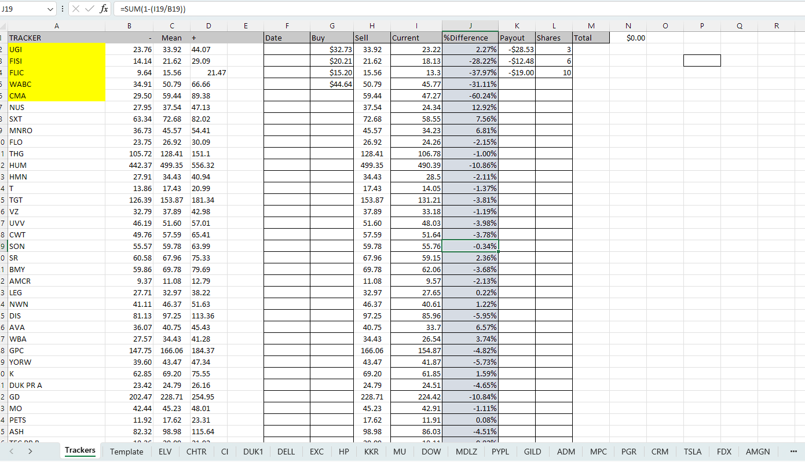
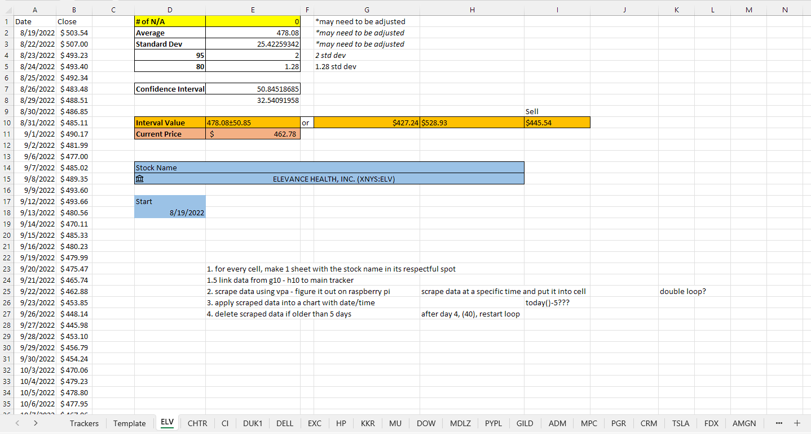
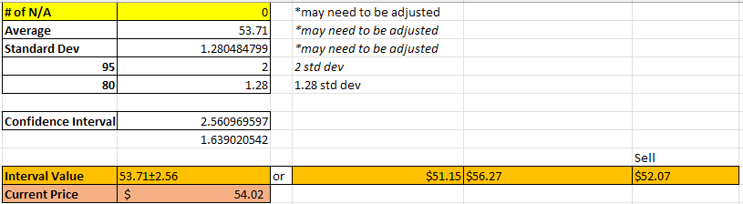
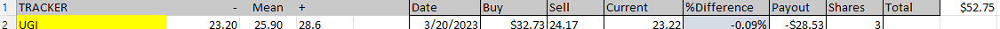

I turned 18, and I was barely spending any money. Stocks have always been in the back of my mind, so I thought to try to code my way through it. Throughout my process, I learned that it obviously was not that simple. However, I was also able to learn quite a bit of VBA through this process. My first project, which I promptly named "Stonks", was quite a success in doing what it needed to do. It took a few weeks and multiple iterations, but my final product was eventually solidified.
My idea was to determine when a stock price was out of place. During the time, I was also taking AP Statistics. I was taught that almost everything follows a bell curve, with 95% of the data within 2 standard deviations. Using this idea, I wanted to automate the process. Eventually, I was able to simultaneously track 394 stocks at the same time.
The first tab, "trackers", is a conglomerate of all stock trackers and information being spit back by other tabs.
Every tab representing a tracker calculates and sends information to the trackers tab.
I calculate a 95% confidence interval through multiple cells. The upper and lower limits of the 95% interval are sent to the trackers page under "+" and "-", respectfully.
The date, buy, and shares are manual inputs, while the sell price is the lower limit of an 80% confidence interval of the same stock. The current price is also listed in each template.
The % difference represents where the stock is in relation to the lower 95% confidence interval. A negative percentage shows that the stock is over the lower limit. A positive percentage shows that the stock is below the lower limit and is a potential buy.
Finally, the payout is a simple calculation of the buy and the current.
Temporary fix for time scraping module.
This was originally going to be used to gain smaller time increments of data in order to portray a more accurate representation of the value of the stock at the moment of observation. The previous comparisons would have only been in relation to closing prices. Time scrape was intended to work around the paid services of many APIs, as they required a payment to view minute-to-minute data. However, due to the nature of the scraper requiring my computer to run indefinitely, I was never able to fully implement it nor test it as it became clear to me that this strategy was not efficient. I also tried to run it on a Raspberry Pi, but it was extremely slow and excel never ran correctly on the Windows version provided.
For my second attempt, I focused on trying to predict when a stock has hit the bottom of a dip. I analyzed the history of multiple stocks, looking for a pattern. Eventually, I landed on some rough estimates that are still being tested to this day. This time, I also worked on separate sections of the full idea and combined everything into a single module for a final draft.